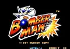
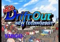
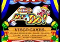
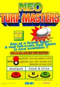
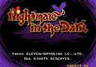
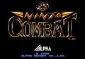
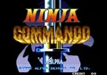
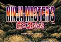
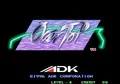
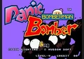

59

Neo Bomberman
qué hace B (las guías consultadas no lo dicen).
Botones
 | A · Poner una bomba |
 | B · ⚠️ Por confirmar (quizá patear o lanzar bombas, con el objeto adecuado) |
  | Empezar |
 | Meter una moneda |
+  | Salir del juego |
No hay juegos con ese nombre.
Pruebas
Marca cada prueba al hacerla. Se guarda en este móvil. Al acabar, pulsa Enviar resultados y pégamelos.
0 de 12 hechas

qué hace B (las guías consultadas no lo dicen).
| A · Poner una bomba |
| B · ⚠️ Por confirmar (quizá patear o lanzar bombas, con el objeto adecuado) |
| | Empezar |
| Meter una moneda |
| + | Salir del juego |

qué botón acelera y cuál frena (las guías consultadas no lo dicen).
| A · Acelerar (⚠️ por confirmar) |
| B · Frenar (⚠️ por confirmar) |
| | Empezar |
| Meter una moneda |
| + | Salir del juego |

qué botón lanza la bola de poder (las guías consultadas no lo dicen).
| A · Lanzar la bola (⚠️ por confirmar) |
| B · ⚠️ Por confirmar |
| | Empezar |
| Meter una moneda |
| + | Salir del juego |

Que arranque y que los botones hagan lo de la tabla.
| A · Golpear (primera pulsación: potencia; segunda: altura) |
| B · Dar efecto a un lado (hook) ⚠️ |
 | C · Dar efecto al otro lado (slice) ⚠️ |
| | Empezar |
| Meter una moneda |
| + | Salir del juego |
qué hace cada botón (las guías consultadas no lo dicen).
| A · Pasar · sin balón: entrar (⚠️ por confirmar) |
| B · Chutar (⚠️ por confirmar) |
 | C · ⚠️ Por confirmar |
| | Empezar |
| Meter una moneda |
| + | Salir del juego |

que A y C lancen fuego y B salte. D no se usa.
| A · Lanzar fuego |
| B · Saltar |
| C · Lanzar fuego |
| | Empezar |
| Meter una moneda |
| + | Salir del juego |

que C haga la voltereta y cómo se lanza la magia ninja (dragón de fuego o rayo). D no se usa.
| A · Atacar · magia ninja |
| B · Saltar |
| C · Ataque especial (voltereta) |
| | Empezar |
| Meter una moneda |
| + | Salir del juego |

que B haga la voltereta y C la técnica ninja. Los especiales se hacen con movimientos del joystick, como en un juego de lucha.
| A · Disparar |
| B · Dar una voltereta |
| C · Técnica ninja |
| | Empezar |
| Meter una moneda |
| + | Salir del juego |

qué hace cada botón y cuál saca o guarda el arma: según StrategyWiki, A y B son puñetazos y C y D patadas.
| A · Puñetazo flojo (⚠️ por confirmar) |
| B · Puñetazo fuerte (⚠️ por confirmar) |
| C · Patada floja (⚠️ por confirmar) |
 | D · Patada fuerte (⚠️ por confirmar) |
| | Empezar |
| Meter una moneda |
| + | Salir del juego |

que A acelere y B frene. Según StrategyWiki, C es el claxon y D los faros.
| A · Acelerar |
| B · Frenar · marcha atrás |
| C · Tocar el claxon (⚠️ según StrategyWiki) |
| D · Encender los faros (⚠️ según StrategyWiki) |
| | Empezar |
| Meter una moneda |
| + | Salir del juego |

qué hacen A y B (las guías consultadas no lo dicen).
| A · Girar las piezas (⚠️ por confirmar) |
| B · Girar las piezas al otro lado (⚠️ por confirmar) |
| | Empezar |
| Meter una moneda |
| + | Salir del juego |
qué hace cada botón (las guías consultadas no lo dicen).
| A · Pasar · sin balón: entrar (⚠️ por confirmar) |
| B · Chutar (⚠️ por confirmar) |
| C · ⚠️ Por confirmar |
| | Empezar |
| Meter una moneda |
| + | Salir del juego |
No hay pruebas con este filtro.